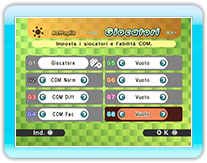
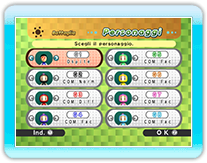

10 |
Imp. Battaglia |
 |
|
Per giocare una Battaglia, esegui le operazioni elencate di seguito.

Scegli il numero di giocatori che parteciperanno e imposta il livello di difficoltà relativo ai giocatori COM su "Fac", "Norm" o "Diff". Scegli "Vuoto" per far partecipare un personaggio in meno.
Premi
* Puoi anche selezionare Mii ospiti, ma in questo caso i risultati della battaglia non verranno salvati. * È possibile selezionare un Mii salvato nel telecomando Wii in uso solo se è stato selezionato un Mii ospite.
Scegli tra 6 tipi di regole di battaglia.
* Se partecipi a una battaglia classificata in modalità Battaglia Wi-Fi, non potrai selezionare "SQUADRE" o "SORPRESA".
Puoi creare squadre solamente selezionando "SQUADRE" nella schermata delle regole.
Scegli il livello in cui giocare e premi
Premi
Controlla le impostazioni selezionate, quindi imposta oggetti e handicap.
Al termine di una battaglia viene visualizzata la schermata dei risultati. In modalità Trofeo viene visualizzato il numero totale di vittorie, mentre in modalità Punteggio viene indicato il numero totale di punti. La proclamazione del vincitore finale avviene quando tutti i round selezionati sono terminati.
|
|||||||||||||||||||||||||||||||||||||||||||||||||||||||||||||||||||||||||||||||||||||||||||||||||||||||||||||||||||||||||||||||||||||||||||||||||||||||||||||||||||||||

 |
 |
 |